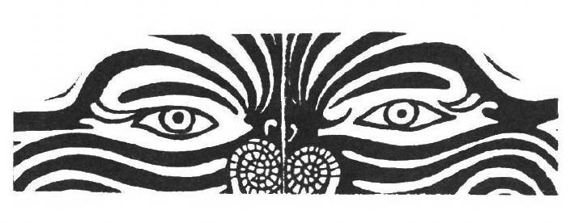

Shamans can be defined as socially sanctioned practitioners who deliberately alter their consciousness for the purpose of obtaining power and knowledge from the II spirit world". They use this power to help and heal members of their community. In psychological terms, shamans regulate their attention so as to obtain information not ordinarily available. Shamans use this information to reduce stress and ameliorate the living conditions of members of the social group that gave them shamanic status. Shamans exert more control over their altered states (and over the II spirit" entities they purport to meet there) than such other magico-religious practitioners as priests, priestesses, or mediums.
Adam Kuper's linguistic analysis suggests that much of the "thinking" that occurs in dreams is of the same kind as that which operates in myth.1 Joseph Campbell has observed that myths are public dreams and that dreams are private myths.2 The shaman's personal dreams, visions, and fantasies provided input to each of the four areas in which mythic thought functioned in traditional societies:
The need to comprehend the natural environment in a meaningful way.
The search for a secure pathway through the succeeding epochs of the human lifespan.
The desire to establish fulfilling personal and work relationships within a cultural setting.
The longing to participate in the vast wonder and mystery of the cosmos.3
The oral tradition, perhaps as originally passed down by the shaman, helped create and preserve the myths that insured a society its identity. Myths helped traditional people interpret their past, find meaning in their present and obtain direction for their future.
Myths can be defined as imaginal statements or stories that address existential human concerns and have behavioral consequences. Without myths, human experience would have been chaotic and human behavior would have been disconnected from anything beyond the moment. A culture's mythology, the collection of all the myths that have been passed down over the years, is a system of imaginative images and premises expressed in story form.
Long ignored or derided, cultural myths are now being studied for what they can lend to the understanding of traditional people's world views.4 For example, North American Indian tribal myths that attribute the creation of the universe to both male and female deities are associated with a greater tolerance for sexual diversity than that found in tribes whose myths relegate creation only to male deities.5
In the cultural myths of many tribal societies, there are accounts of three zones: the Upper World, the Middle Earth and the Lower World. In these societies' Golden Ages, it was said that people traveled between these world with ease; there was no rigid division between wakefulness and dreams. If someone could imagine or dream an event, that action was considered to be, in some sense, "real"6 These cultural myths held that a "Fall" took place, triggered by a sin or an arrogant act. The bridge connected these three zones collapsed; travel between the Middle Earth and the Upper and Lower Worlds became the near exclusive privilege of deities, spirits and shamans.7
Other cultural myths tell of an original Great Shaman, one selected by the deities and capable of incredible powers. The Great Shaman was supposed to have been capable of levitation, flying and bodily transformations.8 These feats were rarely repeated by later shamans, again because human behavior had evoked divine displeasure.9 Using illusion and sleight of hand, many later shamans attempted to duplicate the feats of the Great Shaman; therefore, shamans became the first magicians as well as the first physicians, psychotherapists, weather forecasters, performing artists and story-tellers.
Shamans have entered their vocations in several ways, e.g., through heredity, through unusual birth conditions or markings, through spirit-mediated recovery from illness, during such rituals as vision quests or in initiatory dreams. In Okinawa, spirits notify the future shaman through visions and dreams; most of the recipients who are "called" try to ignore their summons, but eventually succumb to the spirits' directives.10 Common mythic themes in initiatory dreams are dismemberment, death and rebirth. In one case, an Eskimo candidate for shamanism who went into the hills to sleep, dreamed that he was swallowed by a monstrous bear, chewed up and spat out. This was considered to have been a powerful "call" to shamanize.11 The initiation of a kinkins in Western Australia consists of being swallowed by a serpent, vomited, cut into pieces by older kinkins, and revived by their songs.12 Joan Halifax has observed the recurring theme of death and rebirth in shamanic art, e.g., the "X-Ray" style cave paints of Paleolithic France, the mutilated bodies in contemporary Mexican Huichol yarn paintings, the death figures on Tibetan shamanic costumes.13
Among several American Indian tribes, initiatory dreams contain such birds and animals as bears, deer, eagles and owls. The dream creature (who often becomes the shaman's "power animal," "spirit guide," or "totem") typically enables the dreamer to incorporate its wisdom and to begin shamanic training. Among the Inuit Eskimos, a shaman is" called" by dreaming about an animal spirit who then "possesses" the dreamer. Upon awakening, the dreamer withdraws from society and wanders naked through the land. Eventually, the initiate gains control over the spirit, celebrating this victory by making a drum.14
Dreams of a deceased relative are said to mark one's "call" among the Wintu and Shasta tribes of California.14 Among the Southern Valley Yokuts of California, shamanic power may come, unsought, in a dream or from a deliberate quest16 Among the Australian Wirdadthuri, the "call" to heal frequently comes through the dreams of the neophyte's father or grandfather.17
In 1908, I interviewed Margaret Umlazi, a Zulu shaman or sangoma. She told me that she began having epileptic seizures while attending a Christian missionary school. The ministrations of the school's physicians were ineffective, so she visited a sangoma who listened carefully to Umlazi's description of the seizures. The sangoma asked Umlazi if she recalled any recent dreams. Umlazi replied affirmatively, describing a recurrent dream:
I was taken to a large pool of water by a spiritual being whom I could not see. A python came out of the water, wrapped itself around me and pulled me into the pool. My father brought a goat to the water so that I could be delivered from the python . I found myself coming out of the pool and heard a whistle from the snake. As I looked back, I saw the python turning into my dead grandfather. I felt the wind blowing on me as I awakened.
The sangoma told Umlazi that spirits had come to her in the dream, "calling" her to become a twasa or shamanic apprentice. In Zulu tradition, spirits move in the wind, often whistling as they travel. Pythons represent healing power, large bodies of water signify birth and goats are sacrificed and eaten during a feast celebrating a twasa's completion of one phase of his or her training. The transformation of the whistling python into her grandfather was taken to mean that Umlazi's deceased family members looked favorably upon her becoming a twasa. The sangoma informed Umlazi that, as a twasa, she would learn how to heal herself; this would be one of the best preparations for her future work in healing others.
After pondering this advice, Umlazi explained to the sangoma that she had been raised a Christian and that her devotion to Jesus Christ was a very important part of her life. The sangoma smiled, counseling her, "You do not have to give up Jesus to be a sangoma; the more sources of power you have at your disposal, the better." Margaret Umlazi began her long apprenticeship as a twasa; her epileptic seizures subsided and did not return. When she took me into her sanctuary, I observed a picture of Shaka, the celebrated Zulu warrior, on one wall and a picture of Jesus Christ on the other wall. She is known throughout the veld as "The Great Sangoma" because of her knowledge, power and effective treatment procedures.

In 1984 I interviewed Rohanna Ler, another shaman who had been "called" to her vocation through dreams. Ler lives in Ujung Pan dang, Sulawesi, Indonesia; she told me that in 1973, at the age of 30, her son became ill with an eye infection and the local physicians were unable to help him. An elderly man came to her in a dream, gave her a piece of clay and told her to apply it to her son's eyes. Upon awakening, Ler found a coin in her bed and assumed that the clay had been transformed; her son recovered shortly after she applied the coin to his eyes. Ler also interpreted the event asa "call" to become a dukun, or shaman but her husband, a devout Moslem and a successful automobile mechanic, refused to permit his wife to pursue this activity.
A year later, a young man and a young woman appeared to Ler in a daytime vision, asking her why she had not become a dukun. They took Ler outside her house and showed her a fire that threatened her husband's garage. They also gave her a ring that purportedly contained healing powers. Ler shared this vision with her husband as well as her concern that his garage might be in danger if she did not heed the call. Ler's husband reluctantly agreed to allow her to see clients on two conditions: that she not call herself a dukun and that she not keep the money. Within a few years, Ler had become the best known shamanic healer on the island of Sulawesi but donated all her income to Islamic charity. I observed Ler work with 32 clients, giving common sense advice in matters of love and business, suggesting herbal remedies for various illnesses and applying her ring to the bodies of people who needed to be "exorcised" from the influence of evil spirits. Ler told me that she keeps the coin in a secret place and will give it to her successor upon her death.
The training program for apprentice shamans varies from one part of the world to another, but typically lasts for several years. Usually the apprentices will learn their skills from master shamans who teach nomenclature (e.g., the names and functions of deities, spirits and power animals), history (e.g., the tribe's genealogy), technology (e.g., rituals, music, dances), herbology (e.g., the difference between plants used medicinally and those used for sacred purposes), the location of"powerplaces," the identification of "power objects," dream interpretation procedures and the tribe's mythology.
The apprentice also may obtain knowledge from his or her guiding spirits. Ruth Benedict observed that these spiritual guides often take the form of a bird or animal, protecting the shamans as they enter potentially dangerous altered states of consciousness and as they visit the Upper and Lower Worlds.18 The Mohave Indians believe that power and knowledge can be imparted by spirits to the initiate in dreams, sometimes in the form of songs.
Often a dream will repeat what the embryo supposedly dreamed in the womb, or will repeat a dream that his father had dreamed years earlier.19 The Yuma Indians believe that power animals can bestow "power songs" to dreamers. One shaman reported having had a dream at the age of 10 in which a flock of bats gave him a song to use for special purposes.20
Mastery of drumming, dancing, chanting and singing is often an important aspect of a shaman's training. While in Panama City in 1985, I conducted several interviews with Fernando Fernandez, a Cuna Indian shaman who lives on Ustopo, the most heavily populated of the San Blas Islands off the Panamanian coast. Don Fernando explained that he was an abisua or "singer," other types of shamans being the inaduledi or herbalist and the nele or diagnostician who obtains knowledge from his travels to the Lower World. All three practitioners work with guardian spirits and power animals.
Don Fernando's training program focused on learning the complex Cuna healing songs, the shortest lasting about one hour and the longest ("The Song of the Dead") about 14 hours. He stated that he has mastered 15 songs, including those used to combat fevers, treat headaches, fight alcoholism, chase away ghosts, overcome fears and ease the difficulties of childbirth. The latter song is used in combination with the ministrations of the grandmothers who serve as midwives. Don Fernando also claims to work with Nushu, the most important healing spirit who can be contacted in dreams and asked for advice.21
Among the Araucan of southern Chile, the new initiate goes into an altered conscious state and climbs a rewe, a tree that serves as the ladder to the Upper World. The initiate uses dancing and drumming to enter the required altered state and performs as a singer and an instrumentalist immediately after initiation. Among Siberian shamans, by contrast, full mastery of the drum is not achieved until a certain amount of time has elapsed.22 The Tungus initiate makes a stick for his future drum, then practices the shamanic chants. In one case, it took two years before the initiate had a dream about the reindeer whose skin would cover his drum and it was only after the completion of the drum that the initiate was allowed to shamanize.23
Sometimes the training period is quite brief. In the Washo tribe of Nevada and California, the initiate receives power through a dream, then is awakened by a whistle. The initiate follows the whistle which changes to a whisper that dictates instructions. For example, it might give the command to bathe on four successive mornings and treat a sick person on four successive nights. If the client recovers from the illness, the initiate's status as a shaman is confirmed.24 It can be seen that myths govern the call, initiation and training of shamans. Myths also direct shamans' healing practices, their attempts to insure community cohesiveness and their constant efforts to mediate between ordinary and non-ordinary reality, between the secular world and the sacred world.

This paper was presented at "Shamanism, Spirit and Consciousness," a symposium sponsored by Division 32 (Humanistic Psychology), at the 99th annual convention of the American Psychological Association, San Francisco, 16-20 August 1991.
References
Kuper, A. 1986, Structural anthropology and the psychology of dreams. Journal of Mind and Behavior. 7:333-344. P. 343
Campbell, J. 1973. Myths to Live By. New York: Bantam. P. 12
Campbell, J. 1962. Creative Mythology. New York: Viking Press.
Coimbra, C. E. A., Jr. 1982. Pahiter: Arte e Vida Surui. Brasilia: Sobrindes
Williams, WW 1986. The Spirit and the Flesh: Sexual Diversity in American Indian Culture. Boston: Beacon Press.
Halifax, J. 1982. Shaman: The Wounded Healer: New York: Crossroad.
Vastokas, J.M. 1977. The shamanic tree of life. In A. T Brodzky, R. Danesewich, & N. Johnson (Eds.), Stones. Bones and Skin: Ritual and Shamanic Art, Eds, A.T Brodzky, R. Danesewich, & N. Johnson, 93-117, Toronto: Society for Art Publications.
Winkelman, M. 1982. Magic: A theoretical reassessment. Current Anthropology, 23:37-66.
Eliade, M. 1964. Shamanism: Archaic Techniques of Ecstasy. Princeton, NJ: Princeton University Press.
Lebra, WP.1969. Shaman and client in Okinawa. Health Research in Asia and the Pacific, 12:216-222.
Roheim, G. 1952. the Gates of the Dream. New York: International Universities Press. P.182.
Berndt, R., & Berndt, C. 1943. A preliminary report of field work in the Ooldea religion, Western South Australia. Oceania. 14:58-60
Halifax, op cit., pp. 76-77.
Oswalt, WH. 1967. Alaskan Eskimos. San Francisco: Chandler.
Park, WZ. 1968. Shamanism in Western North America: A Study in Cultural Relationships. Chicago: Northwestern University Press:
Wallace, A.EC. 1958. Dreams and the wishes of the soul: A type of psychoanalytic theory among the seventeenth century Iroquois. American Anthropologist. 50:234-248.
Berndt, R.M. 1947. Wuradjeri magic and clever men. Oceania. 17:330-336.
Benedict, R. 1923. The Concept of the Guardian Spirit in North America. Menasha, WI: American Anthropological Association.
Wallace, J.W 1947. The dream in Mohave Life. Journal of American Folk Lore, 40:252-253.
Roheim, op. cit, pp. 196-197.
Van de Castle, R.L. 1947. The Psychology of Dreaming. Morristown, N.J: General Learning Press.
Rouget, G. 1985. Music and Trance: A Theory of the Relations between Music and Possession. Chicago: University of Chicago Press. P. 126.
Vasilevic, G.M. 1969. Evenki: Istoriko-Etnograficeskie Ocerki. Leningrad: Nauka, P. 251.
Rogers, S. L., 1982. The Shaman: His Symbols and His Healing Power Springfield, IL: Charles Thomas. P. 22.